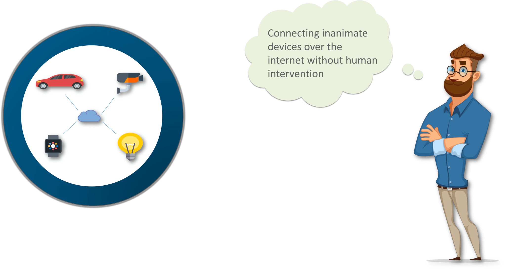
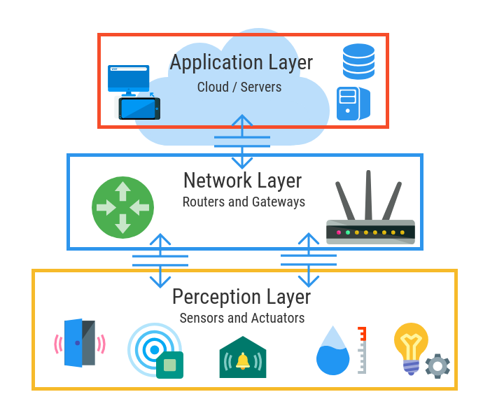
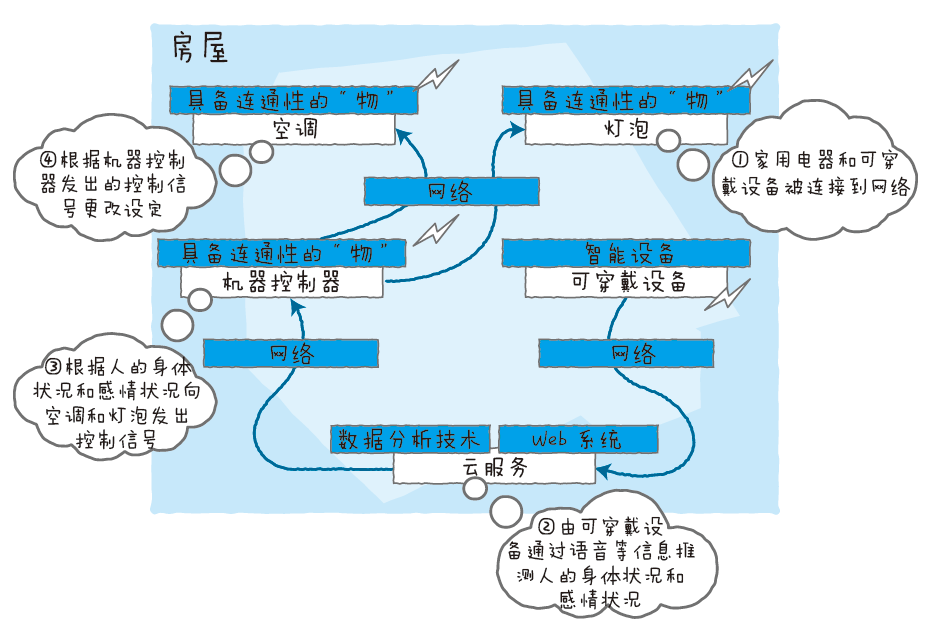

物联网 ===
物联网基础知识
物联网的诞生
让我通过介绍创造“ 物联网 ” 一词的人来启动这个物联网教程。“物联网”（IoT）一词是由Kevin Ashton 于1999年在Proctor＆Gamble的一次演讲中创造的 。他是麻省理工学院Auto-ID实验室的联合创始人。他率先将RFID（用于条形码检测器）用于供应链管理领域。他还创立了Zensi，一家生产能量传感和监测技术的公司。 所以，让我首先向您介绍Kevin Ashton的一句话，他在2009年为RFID期刊撰写了这篇文章。这将有助于您从核心理解物联网。
如果我们拥有能够了解所有事情的计算机 - 使用他们在没有我们任何帮助的情况下收集的数据 - 我们将能够跟踪和计算所有内容，并大大减少浪费，损失和成本。我们知道什么时候需要更换，修理或召回，以及它们是新鲜的还是过去的。 我们需要用他们自己的收集信息的方式赋予计算机权力，这样他们就可以随意地看到，听到和闻到这个世界。
上面凯Kevin的应用会让你了解物联网发展背后的意识形态。现在让我们尝试进一步简化这个术语，从根本上理解物联网。在此之后，我们将继续前进，并寻求物联网的好处。
什么是物联网？
大家在听到物联网时，脑海中会出现一个什么样的印象呢？物联网的英语是Internet of Things，缩写为IoT，这里的“物”指的是我们身边一切能与网络相连的物品。例如您身上穿着的衣服、戴着的 手表、家里的家用电器和汽车，或者是房屋本身，甚至正在读的这本 书，只要能与网络相连，就都是物联网说的“物”。
就像我们用互联网在彼此之间传递信息一样，物联网就是“物”之间通过连接互联网来共享信息并产生有用的信息，而且无需人为管理就 能运行的机制。他们可以互相感知和沟通。现在想象一下，无生命的物体是否可以在没有任何人为干预的情况下感知并相互作用。听起来很神奇不是吗？

what is IoT?
物联网架构
目前物联网架构通常分为感知层、网络层和应用层三个层次，也有四层架构、五层架构和七层架构的分法，不过我们这里使用通常使用的三层架构进行说明。图示如下:
{kind=link}

三层物联网架构
感知层
与环境交互的传感器，执行器和边缘设备
感知层是物联网的皮肤和五官，用于识别物体、感知物体、采集信息、自动控制，比如装在空调上的温度传感器识别到了室内温度高于30度，把这个信息收集后，自动打开了空调进行制冷；这个层面涉及到的是各种识别技术、信息采集技术、控制技术。而且这些技术是交叉使用的的，各种感知有些是单一的，有些则是综合的，比如机器人就是整合了各种感知系统。 这一层最常见的就是各种传感器，用于替代或者延展人类的感官完成对物理世界的感知，也包括企业信息化过程中用到的RFID以及二维码技术。
网络层
通过网络并与应用层协调发现，连接和转换设备
网络层则主要实现信息的传递、路由（决定信息传递的途径）和控制（控制信息如何传递），分为两大部分， 一部分是物联网的通信技术，一部分是物联网的通讯协议，通讯技术负责把物与物从物理上链接起来，可以进行通信，通讯协议则负责建立通信的规则和统一格式。
物联网通讯协议和通讯技术一样的多，如MQTT、DDS、AMQP、XMPP、JMS、REST、CoAP、OPC UA。网络层就相当于人的大脑和神经中枢，主要负责传递和处理感知层获取的信息。
应用层
为用户提供专业服务和功能的数据处理和存储
我理解应用层是在各种物联网通讯协议的支持下，对物联网形成的数据在宏观层面进行分析并反馈到感知层执行特定控制功能，包括控制物与物之间的协同，物与环境的自适应，人与物的协作。 应用层个人理解可分为两大部分，一部分是通用的物联网平台，建立在云平台之上，可以是IAAS/PASS/SAAS的一种或者混合。 目前已经有不少企业推出了物联网平台，比如树根互联、百度云天工、腾讯QQ物联智能硬件开放平台、阿里Link物联网平台、SAP Leonardo、亚马逊AWS、微软Azure、Google Cloud IoT Core。 另外一部分是在这个通用的物联网平台上再产生具体应用，这些应用类似于手机App，具体应用就是如何具体控制这些物如何收集信息，如何进行控制物。这些具体应用场景包括：
个人应用：可穿戴设备、运动健身、健康、娱乐应用、体育、玩具、亲子、关爱老人；
智能家居：家庭自动化、智能路由、安全监控、智能厨房、家庭机器人、传感检测、智能宠物、智能花园、跟踪设备；
智能交通：车联网、智能自行车/摩托车（头盔设备）、无人驾驶、无人机、太空探索；
企业应用：医疗保健、零售、支付/信用卡、智能办公室、现代农业、建筑施工；
工业互联网：智能制造、能源工业、供应链、工业机器人、工业可穿戴设备（智能安全帽等）；
从应用层面可以看出，物联网真的是可以无处不用，无处不在。物联网的最终目标是实现任何物体在任何时间、任何地点的链接，帮助人类对物理世界具有“全面的感知能力、透彻的认知能力和智慧的处理能力”。
{kind=link}

根据人体状况自动控制环境——以智能家居为例
IoT教程
目前实现物联通讯协议有MQTT、REST/HTTP、CoAP等多种协议。可接入的综合性的物联网平台也有不少。本章节重点讲解如何接入某物联网平台、物联应用、如何显示物与物之间的通讯。